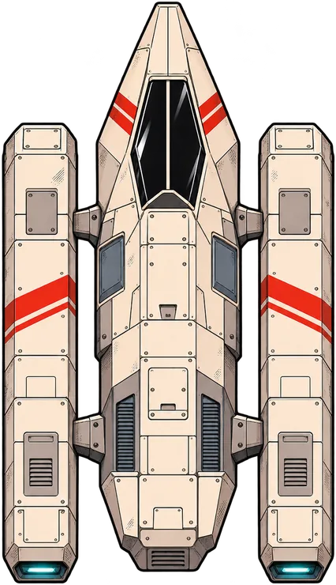

✦ SMALL SHIP. LARGE PROBLEM.
Your fleet is helping.That’s the problem.
↔ ONE THUMB · MOUSE · WASD · CONTROLLER

01 DRAG TO FLY
02 PASS TO HOOK
03 BRING THEM HOME
Your flight is paused. The fleet can wait.
RECOVERY REPORT
0BROUGHT HOME
×1BEST CHAIN
0CLOSE CALLS
Saved on this device. The next flight is one tap away.
Drag anywhere in the flight field to thrust. Release to brake. Use WASD, arrow keys, or a standard controller’s left stick / D-pad. P, Escape or controller Start pauses; A resumes or launches. On a keyboard, Enter launches from the hangar.
Pass close to a blue capsule to hook it automatically. Tow it back to the blue berth at the bottom. A full tow earns a bonus. Return within 15 seconds to build a chain up to ×8. A hit releases your cargo; it can be rescued again. Every 12 scrap pieces improve your ship for this run.
Bronze: 3 capsules home. Silver: 8 and 9,000 points. Gold: 16 and 30,000 points. Every flight lasts 90–95 seconds, unless the recovery crew brings you in early.
Motion follows your device’s reduced-motion setting. Every hazard has a visible cue; sound is optional. Rotating the screen pauses safely.
Created for MARS · Heroically Unqualified by Tim Mecklenburg. Story, characters, original manga panels and audio: © Tim Mecklenburg. All rights reserved.
Rook Sen flies the Moth, with Iona Vale on the recovery line and Tavi Orr aboard. This arcade adapts the published manga into repeatable rescue exercises. Scores, repeated capsules, upgrades and flight routes are game abstractions. Beam’s quoted dialogue and voice are original recordings from the credited panels.
AI disclosure / KI-Kennzeichnung: Game code and new ship, debris and space illustrations were created with OpenAI Codex and the built-in image generation tool, using the MARS style bible and original design references. The manga artwork and dub also use AI-assisted production. Sound effects and optional music are original Web Audio synthesis. No third-party samples.
Barlow and Barlow Condensed: Jeremy Tribby, SIL Open Font License. Bangers: Vernon Adams, SIL Open Font License. Fonts are hosted locally.
No account, analytics, tracking or external requests. Your scores and settings stay in this browser. An offline copy is stored after your first visit.
Back to the MARS site ↗ · Impressum ↗ · Privacy ↗